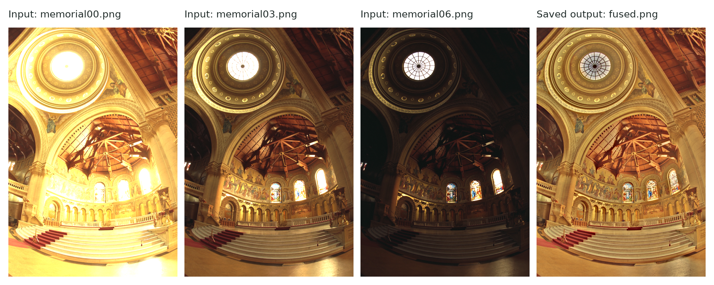
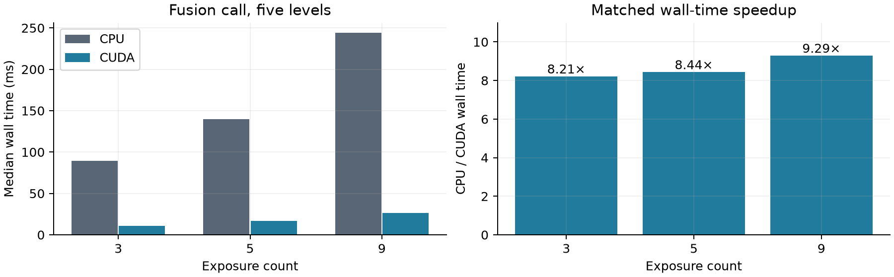
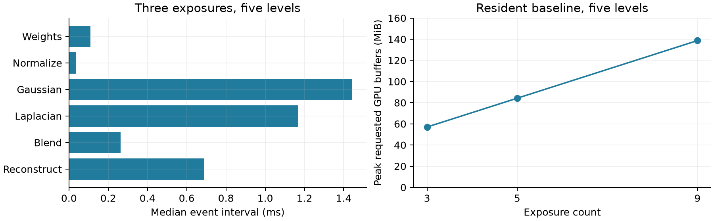

Implementation and design
We have completed a serial CPU reference and a separate-kernel working CUDA baseline for Mertens exposure fusion. Both compute contrast, saturation, and well-exposedness weights, normalize them across exposures, build Gaussian weight pyramids and Laplacian image pyramids, blend the levels, and reconstruct one output image. They share the same floating-point, sampling, and reflected-boundary rules. The command-line application accepts aligned RGB PNG/PPM inputs, supports different pyramid depths, and saves the fused image. See the algorithm specification for the numerical conventions and pipeline details.
The CUDA baseline keeps all input pyramids in GPU memory and launches separate kernels for most operations. The baseline only involves straightforward kernel launches without optimizations such as shared-memory tiling or buffer reuse (these will be explored in future work). To evaluate and profile performance, we added stage timing, device-buffer allocation tracking, CPU/GPU comparisons, and profiling scripts. All correctness checks passed on the GPU machine. And we have conducted a series of preliminary experiments to measure runtime, speedup, and memory usage. The preliminary results are reported below.
Preliminary results
Sample output and correctness analysis
The following figure shows the three supplied Memorial exposures alongside the saved sample output. The output shows visible detail in both the bright window and darker architectural regions; visual inspection is separate from the numerical correctness checks below.

The saved output's exact generation settings are unverified: a fresh CPU run on these three inputs with the default pyramid depth produced a different 8-bit image. The figure is illustrative and is not evidence that the pictured output was generated by that run.
We compared the CUDA output against the CPU reference for all test cases, including different numbers of exposures and pyramid levels.
The largest CUDA-versus-CPU maximum absolute error was 3.58e-7; the largest RMSE was 2.34e-8, below our test limits of 2e-5 and 2e-6. This supports numerical correctness; visual quality will be evaluated separately.
Overall runtime analysis
Experiments used an Intel Core i7-9700 and NVIDIA RTX 2080 on GHC40, CUDA 11.7, and a Release build. We used the OpenCV HDR exposure test images as input, which include sequences of aligned multi-exposure images of the Memorial scene.
We tested the Memorial scene at 484 by 714 pixels, with 1/3/5/9 exposures (number of input images) and 1–5 pyramid levels. There are 20 cases in total, each with two warmups and ten measured trials. The table reports median fusion-call wall time. Image loading/saving is excluded, but CUDA wall time includes transfers and allocation/cleanup.
| Exposures, 5 levels | CPU (ms) | CUDA (ms) | Speedup |
|---|---|---|---|
| 3 | 89.387 | 10.882 | 8.21x |
| 5 | 140.025 | 16.600 | 8.44x |
| 9 | 244.236 | 26.298 | 9.29x |
Based on the results, CUDA is about 8x-9x faster in these cases. As expected, more exposures generally increase runtime, and the advantage of CUDA becomes more pronounced with higher exposure counts (as speedup grows from 8.21x for 3 exposures to 9.29x for 9 exposures).
We also examine the effect of pyramid depth on CUDA runtime. For 3 exposures, increasing depth from 2 to 5 raises CUDA time from 9.106 to 10.882 ms: later levels add less work because their images are smaller.

Stage timing and memory analysis
Apart from overall runtime, we also analyze the timing of individual stages within the CUDA pipeline. This helps identify which parts of the computation dominate execution time and are potential targets for optimization.
For 3 exposures and 5 levels, the CUDA event pipeline took 3.715 ms. Gaussian construction took 1.444 ms and Laplacian construction 1.166 ms, together about 70% of that interval. Weight computation, normalization, blending, and reconstruction took 0.110, 0.036, 0.263, and 0.690 ms, respectively. Pyramid operations are therefore our first kernel-optimization target.
Memory use and allocation count grow with exposure count, motivating buffer reuse and incremental execution. These measurements exclude CUDA driver/context memory. Tracked live bytes returned to zero after every instrumented trial.
| Exposures, five levels | Peak requested GPU buffers (MiB) | Allocations per call |
|---|---|---|
| 3 | 56.99 | 74 |
| 5 | 84.22 | 98 |
| 9 | 138.68 | 146 |

Profiling also identifies overhead outside the kernels. The three-exposure, five-level CLI run made 74 allocations and 104 device synchronizations. The current implementation synchronizes after each kernel to check execution errors. We will test buffer reuse and fewer explicit waits alongside filtering improvements. Profiled allocation time includes CUDA startup, so it does not establish the allocation share of steady-state runtime.
Progress and remaining goals
The proposal's 50% functional-baseline target is complete, consistent with the planned CPU and CUDA implementation schedule. We have baseline measurements but no measured optimized-versus-baseline comparison yet.
We still aim to complete the 100% target by the poster session:
- Optimize neighborhood operations using shared-memory tiling and an explicitly compared kernel-fusion variant.
- Reuse buffers and reduce unnecessary synchronization while preserving correctness.
- Implement multi-pass incremental execution and compare it with the current full-resident mode. A first pass will accumulate the weight sum; a later pass will recompute or reload each exposure's weights and accumulate its normalized pyramid contribution.
- Compare changes individually and together using wall time, stage timing, peak buffer memory, numerical error, and visual examples across more scenes and resolutions.
The 150% goals—automatic memory-budget planning and overlapping transfers with computation—remain optional. We will attempt them only after the core comparisons are complete.
Main concerns
- Unusual timings: single-exposure CUDA wall time rose from 11.284 ms at one level to 111.919 ms at five levels; three-exposure processing was also slower at one level than at two. We will repeat timing-only runs on an idle machine and inspect synchronization and GPU activity before drawing scaling conclusions.
- Limited input coverage: results currently cover one scene and one resolution. We need more aligned scenes, resolution sweeps, and visual alignment checks.
- Incremental normalization: every normalized weight depends on all exposures. The multi-pass design must preserve this dependency while trading memory savings against recomputation and transfers.
- Optimization uncertainty: tiling and fusion may help large levels but add overhead or resource pressure at small levels. We need measured comparisons to decide which changes to retain.
Schedule
| Dates | Estella Xie | Junhao Li |
|---|---|---|
| Nov 24–26 | Implement weight-sum and normalized contribution passes for incremental execution. | Implement shared-memory filtering and a neighborhood-fusion comparison. |
| Nov 27–30 | Integrate incremental execution and validate against the resident baseline. | Integrate buffer reuse and reduced synchronization; measure correctness and memory. |
| Dec 1–3 | Compare execution modes across exposure counts and additional scenes. | Run depth/resolution sweeps and separate optimization comparisons. |
| Dec 4–6 | Complete memory/runtime analysis; attempt planning if core work is complete. | Complete kernel analysis; attempt transfer overlap if core work is complete. |
| Dec 7–10 | Finalize evaluation and the Dec 10 final report. | Finalize poster figures, visual examples, and CLI demonstration. |
| Dec 11 | Present incremental-execution and memory results. | Present kernel/performance results and demonstrate the application. |
Poster and submission
We plan to demonstrate the command-line application and show input exposures beside fused outputs. Graphs will compare CPU, baseline CUDA, and optimized runtime; explain stage costs; and show the memory/runtime trade-off between resident and incremental execution.
Reference
Tom Mertens, Jan Kautz, and Frank Van Reeth. Exposure Fusion. Pacific Graphics, 2007. Paper.